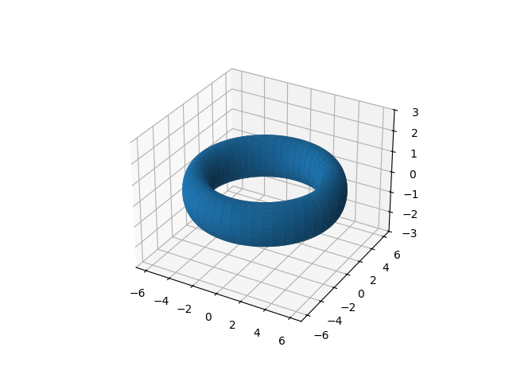
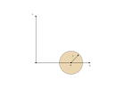
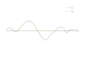

Mat3teden5
Table of Contents
1. Riemann-Darbouxov integral
1.1. Uvedba nove spremenljivke 2024/10/28
1.1.1. Sferične koordinate v \( \mathbb{R}^3 \)
Velja
\begin{align*} x &= r \sin \vartheta \cos \varphi \\ y &= r \sin \vartheta \sin \varphi \\ z &= r \cos \vartheta \end{align*}kjer so \( r \in (0, \infty) \), \( \varphi \in [0, 2 \pi) \) ter \( \vartheta \in [0, \pi] \) določajo \( \Phi \)
Jacobijeva matrika je tako oblike
\[ \left| J \Phi \right|= \begin{vmatrix} \sin \theta \cos \phi & \ldots & \ldots\\ \sin \theta \sin \phi & \ldots & \ldots \\ \cos \theta& \ldots & \ldots \end{vmatrix} = r ^2 \sin \theta \]
1.1.2. Primer od zadnjič (valj v sferi) 2.10 (p.S. )

Izračunamo \( V(\Omega) \) v sferičnih koordinatah. Spomnimo se, da imamo
\[ V(\Omega) = \int\limits_0^{2 \pi} \int\limits_0^{\pi} \int\limits_0^R 1 \cdot r ^2 \sin \theta\,\mathrm{dr}\,\mathrm{d} \phi \,\mathrm{d} \theta \]
Težava z mejami je tam, kjer kot \( \phi \) preide iz plašča valja na osnovno ploskev tako, da prilagodimo z uvedbo nove spremenljivke \( \theta_0 = \arcsin (\rho/ R) \)
\[ V(\Omega) = \int\limits_0^{2\pi}\,\mathrm{d} \phi \left[\left( \int\limits_0^{\theta_0}\,\mathrm{d}\theta + \int\limits_{\pi - \theta_0}^{\pi}\,\mathrm{d}\theta \right) \int\limits_0^R r ^2 \sin \theta\,\mathrm{dx} + \int\limits_{\theta_0}^{\pi - \theta_0} \,\mathrm{d} \theta \int\limits_0^{\rho/\sin \theta} r ^2 \sin \theta \,\mathrm{dr} \right] \]
Pri drugem integralu je meja 3. integrala odvisna od izstopnega kota.
Za domačo nalogo imaš drugačen vrstni red integracije (\( \phi \) ne igra nobene vloge in zamenjaš ga z \( \theta \) - fiksiraš \( \phi \)).
1.1.3. Definicija 2.16 (p.S.)
Naj ima telo \( T \subset \mathbb{R}^3 \) gostoto \( \rho = \rho(x, y, z) \). Če je \( \rho = \text{ konst. } \) je telo homogeno.
Masa telesa \( T \) je definirana kot
\[ m(T) = \iiint\limits_T \rho(x, y, z) \, \mathrm{dV} \]
1.1.4. Definicija 2.17 (p.S.)
Težišče telesa \( T \) je točka \( (x_t, y_t, z_t) \subset \mathbb{R} ^3 \) za katero velja
\begin{align*} x_t &= \frac{1}{m(T)} \iiint\limits_T x \rho(x, y, z) \, \mathrm{dV} \\ y_t &= \frac{1}{m(T)} \iiint\limits_T y \rho(x, y, z) \, \mathrm{dV}\\ z_t &= \frac{1}{m(T)} \iiint\limits_T z \rho(x, y, z) \, \mathrm{dV} \end{align*}Kompaktneje se to zapiše kot
\[ \mathbf{x}_t = \frac{1}{m(T)} \int\limits_T (x, y, z) \rho \,\mathrm{dx} = \frac{1}{m(T)} \int\limits_T \vec{\xi} \rho\,\mathrm{dV} \]
kjer je \( \vec{\xi} = (x, y, z) \) vektorska funkcija. Težišče nam pove povprečje položajev glede na utež \( \rho \)
1.1.5. Definicja 2.18 (p.S.) 2024/10/29
Vztrajnostni moment telesa \( T \subset \mathbb{R} ^3 \) pri vrtenju okoli osi \( \gamma \subset \mathbb{R}^3 \) je enako
\[ J_{\gamma} = \int\limits_T d(\vec{x}, \gamma) ^2 \rho(\vec{x}) \,\mathrm{d\vec{x}} \]
kjer je \( d(\vec{x}, \gamma) \) oddaljenost točke \( \vec{x} = (x, y, z) \) od osi \( \gamma \).
V posebnem primeru je to:
\[ J_z = \iiint\limits_T (x ^2 + y ^2) \rho(x, y, z) \, \mathrm{dx}\, \mathrm{dy} \mathrm{dz} \]
1.1.6. Torus v \( \mathbb{R}^3 \)

Kako matematično opišemo torus? Začnemo v ravnini \( xz \), kjer imamo krožnico, ki jo zarotiramo okoli \( z \) osi za poljuben kot \( \phi \). Torus je rotacijsko invarianten.

Parametri za plašč torusa so oddaljenost od koordinatnega izhodišča \( a \) ter polmer krožnice \( r \).
Opišemo (enotsko) krožnico v \( xz \) ravnini z
\[ x = a + R \cos \theta \quad z = \sin \theta \]
za \( \theta \in [0, 2\pi) \). S tem smo dobili geometrijski objekt.
Sedaj bomo s transformacijo v \( \mathbb{R} ^3 \) ustvarili torus. Ta transformacija je rotacija, ki je linearna operacija (\( \mathbb{R} ^3 \to \mathbb{R}^3 \)), pripada pa ji matrika:
\[ r_{\phi} = \begin{bmatrix} \cos \phi & - \sin \phi & 0\\ \sin \phi & \cos \phi & 0 \\ 0 & 0 & 1 \end{bmatrix} \]
Torus tako izgleda kot
\[ T = \left\{ \begin{bmatrix} \cos \phi & - \sin \phi & 0 \\ \\sin\phi & \cos \phi & 0\\ 0 & 0 & 1 \end{bmatrix} \begin{bmatrix} a + R \cos \theta \\ 0 \\ R \sin \theta \end{bmatrix}; \quad \theta \in \left[0, 2\pi \right), \ \phi \in \left[0, 2\pi \right)\right\} \]
oz. poračunano kot
\[ T = \left\{ \begin{bmatrix} (a + R \cos \theta) \cos \phi \\ (a + R \cos \theta) \sin \phi \\ R \sin \phi \end{bmatrix}; \ \theta \in [0, 2\pi), \ \phi \in [0, 2\pi) \right\} \]
To je plašč torusa. Parametrizacija polnega torusa pa je z dodatkom \( r \in [0, R] \)
\begin{equation} \label{eq:1} T = \left\{ \begin{bmatrix} (a + r \cos \theta) \cos \phi \\ (a + r \cos \theta) \sin \phi \\ r \sin \phi \end{bmatrix}; \ r \in [0, R] \ \theta \in [0, 2\pi), \ \phi \in [0, 2\pi) \right\} \end{equation}Jacobijeva determinanta torusa je \( \left| JT \right| = \left| a + r \cos \theta \right|r \)
Vztrajnostni moment polnega torusa okoli \( z \) osi je
\begin{align*} J_z &= \int\limits_0^{2 \pi} \int\limits_0^{2\pi} \int\limits_0^R (a + r \cos \theta) ^2 \left| a + r \cos \theta \right| r \,\mathrm{dr}\,\mathrm{d}\theta\,\mathrm{d}\phi \\ &= \ldots \\ &= \frac{\pi ^2 R ^2 a}{2} (3 R ^2 + 4 a ^2) \end{align*}kjer smo vpeljali koordinate iz parametrizacije polnega torusa \ref{eq:1} iz splošne enačbe za vztrajnostni moment \( J_z \) v kartezičnih koordinatah.
Izračun je prepuščen bralcu za domačo nalogo.
1.2. Izlimitirani Riemann-Darbouxovi integrali
Doslej smo imeli omejene funkcije na omejenh množicah. Ali lahko te predpostavke odstranimo in imamo RD integral na neomejenih funkcijah (pol).
Naj bo \( D \subset \mathbb{R}^n \), ki ni nujno omejena (neomejena).
\( f: D \to [0, \infty] \) omejena.
\[ \int\limits_D f\,\mathrm{dV} := \lim_{a \to \infty} \int\limits_{D \cap [-a, a] ^n} f\,\mathrm{dV} \]
Če vsi izrazi na desni obstajajo.
\( f: D \to [0, \infty) \) neomejena. Tedaj definiramo
\[ \int\limits_D f\,\mathrm{dV} := \lim_{M \to \infty} \int\limits_D \min \{f(x), M\}\,\mathrm{dx} \]
če vsi izrazi na desni obstajajo.
\( f:D \to \mathbb{R} \) (ni več pozitiven neskončen interval!)
Poljubno funkcijo poskusimo izraziti s pomočjo pozitivnih funkcij (saj imam zanje že imamo definicijo).
Definiramo
\[ f_+ := \max \{f, 0\} \] Torej, če je funkcija pozitivna vzamemo njeno pozitivno vrednost, drugače je 0. Obratno velja za
\[ f_- = \min\{-f, 0\} \]

In velja
\[ f = f_+ - f_-, \quad f_{\pm} \ge 0 \]
Iz česar sledi
\[ \int\limits_D f\,\mathrm{dx} := \int\limits_D f_+\,\mathrm{dV} - \int\limits_D f_-\,\mathrm{dV} \]
Če oba integrala na desni obstaja in sta končna (nočemo razlike dveh neskončnosti).
Poglejmo absolutno vrednost \( \left| f \right| = f_+ + f_-\), iz česar sledi, da je za definicijo \( \int\limits_D f\,\mathrm{dV} \) pomembno, da obstaja \( \int\limits_D \left| f \right| \,\mathrm{dV} \).
1.3. Primer
Za kakšne \( s \in \mathbb{R} \) konvergira ( obstaja v \( \mathbb{R} \))
\[ I_n (s) = \int\limits_{K^n(0, 1)} \frac{1}{\left| x \right|^s}\,\mathrm{dx}, \quad n \in \mathbb{N} \]
Za \( n = 1 \):
\begin{align*} I_1(s) &= \int\limits_{-1}^1 \frac{1}{\left| x \right|^s}\,\mathrm{dx} \\ &= 2 \int\limits_0^1 \frac{1}{x ^s}\,\mathrm{dx} = \frac{2}{1- s} \end{align*}kar \( \exists \iff s < 1 \)
Za \( n = 2 \) je
\begin{align*} I_2(s) &= \iint\limits_{\{x ^2 + y ^2 < 1\}} \frac{1}{(x ^2 + y ^2)^{\frac{s}{2}}} \, \mathrm{dx} \, \mathrm{dy} \\ & \stackrel{\text{ polarne }}{=} \int\limits_0^{2\pi} \int\limits_0^1 \frac{1}{r^s} r \,\mathrm{dr}\,\mathrm{d}\phi = 2\pi \int\limits_0^1 \frac{1}{r^{s -1}}\,\mathrm{dr} \\ &= \frac{2\pi}{2 - s} \end{align*}Za \( n = 3 \):
\begin{align*} I_3(s) &= \iiint\limits_{K ^3 (0, 1)} \frac{1}{(x ^2 + y ^2 + z ^2) ^{\frac{s}{2}}} \\ & \stackrel{\text{sfericne}}{=} \int\limits_0^{2\pi} \int\limits_0^{\pi} \int\limits_0^1 \frac{1}{r ^s} r ^2 \sin \theta\,\mathrm{dr}\,\mathrm{d}\theta\,\mathrm{d}\phi \\ &= C \int\limits_0^1 \frac{1}{r^{s -2}}\,\mathrm{dr} = \frac{1}{2} I_1(s -2) = \frac{2}{1 - (s -2)} \\ &= \frac{8 \pi}{3 - s} && \text{ če } s < 3 \end{align*}če je \( s - 2 < 1 \) oz. \( s < 3 \). Za \( s \ge 3 \) integral divergira.
2. Krivulje v \( \mathbb{R} ^3 \)
Del snovi je izpuščen, ker sta Mrčun in Dragičevič letos (2024) govorila in ugotovila, da se del snovi pokriva. Prejšnja leta vsebujejo polno snov.
Krivulja je gladka funkcija \( I \subset \mathbb{R}, \ \gamma: I \to \mathbb{R}^3 \ \ni: \ \dot{\gamma}(t) \ne 0 \). Poznana pojma: parametrizacija in naravna parametrizacija (hitrost ves čas po absolutni vrednosti enaka 1).
Dolžina krivulje \( \Gamma = \{\vec{r}(t), \ t \in [a, b]\} \) je
\[ l (\Gamma) = \int\limits_a^b \left| \dot{\vec{r}} \right|\,\mathrm{dt} \]
Ta definicija je dobra (neodvisna od parametrizacije).
2.0.1. Zgled 3.1 (p.S.)
Vijačnica ima formulo \( \vec{r}(t) = (a \cos t, a \sin t, bt), \ a, b > 0, \ t \in \mathbb{R} \).
2.0.2. Definicija 3.7 (p.S.)
Enotski tangnenti vektor
\[ \frac{\odv{r}(t) }{\left| \odv{r} (t) \right|} \]
Tangenta v točki \( \odv{r}(t_0) \) premica skozi \( \vec{r}(t_0) \) v smeri tangentnega vektorja na \( \Gamma \) v točki \( \vec{r}(t_0) \).
Enačba premice je
\[ (x, y, z) = \vec{r}(t_0) + \lambda \odv{r}(t_0) \]
Normalna ravnina na \( \vec{r}(t_0) \) je ravnina skozi \( \vec{r}(t) \) pravokotna na tangentni vektor.
2.1. Pritisnjena ravnina 2024/10/30
Ideja za pritisnjeno ravnino je:
- izberemo točki blizu \( \vec{r}(t_0) \)
- Če so \( \vec{r}(t_0, t_1, t_2) \) nekolinearne obstaja ravnina skozi dane točke.
- Izberemo normalo \( \vec{n}(t_0, t_1, t_2) \in S ^2 \), kjer je \( S ^2 \) enotska sfera v \( \mathbb{R} ^3 \)
- Poskusimo z \( \lim\limits_{t_1, t_2 \to t_0}\vec{n}(t_0, t_1, t_2) \)
- Če ta limita obstaja, določa normalo pritisnjene ravnine.
Dragi vpraša, ali je vse jasno kakšna umetniška zvrst je to.
Sedaj nas zanima, ali se to da, kdaj (ne kot dan v tednu) ter kako.
2.1.1. Izrek 3.15 (p.S.)
Naj bo \( \gamma \) regularna parametrizacije \( C ^2 \) neke krivulje v \( \mathbb{R} ^3 \). Za dani \( t_0 \in \mathbb{R} \) privzamemeo, da je \[ \vec{v} _0 = ( \dot{\gamma} \times \ddot{\gamma} )(t_0) \ne 0 \]
Fizikalno to pomeni, da pospešek in hitrost nista usmerjena v smeri. Tedaj obstaja \( \delta > 0 \) tako, da za poljubne točke \( t_1, t_2 \in (t_0 - \delta, t_0 + \delta\) tako, da \( t_1, t_2, t_0 \) so medsebojno različne, so točke \( \gamma(t_0), \ \gamma(t_1), \ \gamma(t_2) \)
Dokaz:
Denimo, da so točke \( t_0, \ t_1, \ t_2 \) kolinearne. Označimo z \( l = l(t_1, t_2) \) premico, ki jih vsebuje, prestavljeno v izhodišču \( (\cdot, \gamma(t_0)) \). Vzamemo \( w \in l^{\perp} \). Recimo, da je \( t_0 < t_1 < t_2 \) (alternativno lahko tudi \( t_1 < t_0 < t_2 \)). Ker je \( \gamma(t_j) - \gamma(t_0) \in l; \ j = 1, 2 \).
Odtod sledi, da je
\[ \left\langle \gamma(t_1) - \gamma(t_0), w \right\rangle = \left\langle \gamma(t_2) - \gamma(t_0), w \right\rangle = 0 \]
Definiramo \( f(t) = \left\langle \gamma(t) - \gamma(t_0), w \right\rangle \) . Sledi \( f(t_0), f(t_1), f(t_2) = 0 \)
Po Rolleovem izreku \( \exists \xi_1, \xi_2 \in \mathbb{R} \ni \)
\[ t_0 < \xi_1 < t_1 < \xi_2 < t_2 \ni: \quad f'(\xi_1) = f'(\xi_2) = 0 \]
oziroma drugače zapisano
- \[ \left\langle \gamma'(\xi_1), w \right\rangle = \left\langle \gamma'(\xi_2), w \right\rangle = 0 \]
- Spet po Rolleovem izreku sledi, da \( \exists \xi_3 \in (\xi_1, \xi_2) \ni \ f''(\xi_3) = 0 \) oz, \( \left\langle \ddot{\gamma}(\xi_3), w \right\rangle = 0 \)
Če sta \( t_1, t_2 \) blizu \( t_0 \), sta zaradi \( \gamma \in C ^2 \) tudi \( \dot{\gamma}(\xi_1), \dot{\gamma(\xi_2)} \) blizu \( \dot{\gamma}(t_0) \) in \( \dot{\gamma}(\xi_3) \) blizu \( \ddot{\gamma}(t_0) \).
Iz prve in druge točke sledi, da je \( w \) skoraj pravokoten na \( \dot{\gamma}(t_0) \text{ in } \ddot{\gamma}(t_0) \). Posledično je \( w \) skoraj vzporeden z \( \dot{\gamma}(t_0) \times \ddot{\gamma}(t_0) \).
Torej \( w \) leži v ozkem stožcu okoli tega vektorja \( \dot{\gamma}(t_0) \times \ddot{\gamma}(t_0) \), kar pa je protislovje, saj je \( w \) poljuben element iz neke ravnine.
Eksaktna izpeljava: Vzamemo \( \epsilon > 0 \). Velja
\begin{align*} v_0 \times w &= [ \dot{\gamma}(t_0) \times \ddot{\gamma}(t_0)] \times w \\ &\stackrel{\text{lin. alg}}{=} \left\langle \dot{\gamma}(t_0), w \right\rangle \ddot{\gamma}(t_0) - \left\langle \ddot{\gamma}(t_0), w \right\rangle \dot{\gamma}(t_0) \\ &\stackrel{1), 2)}{=} \left\langle \dot{\gamma}(t_0) - \dot{\gamma}(\xi_1), w \right\rangle \ddot{\gamma}(t_0) - \left\langle \ddot{\gamma}(t_0) - \ddot{\gamma}(\xi_3), w \right\rangle \dot{\gamma}(t_0) \end{align*}Katere črke nimam? - Dragi A vsi poznate Cauchy-Schwartzovo neenakost? /~ The classroom is silent/~ Pričakoval sem večje navdušenje.
Cauchy-Schwartzova neenakost je \( \left| \left\langle \vec{a}, \vec{b} \right\rangle \right| \le \left| \vec{a} \right| \cdot \left| \vec{b} \right|\)
Iz tega potem sledi
\[ \left| v_0 \times w \right| \le \left( \left| \dot{\gamma}(t_0) - \dot{\gamma}(\xi_1) \right| \left| \ddot{\gamma}(t_0) \right| - \left| \ddot{\gamma}(t_0) - \ddot{\gamma}(\xi_3) \right| \left| \dot{\gamma}(t_0) \right|\right) \left| w \right| \]
Definiramo
\begin{align*} \alpha &= \left| \dot{\gamma}(t_0) - \dot{\gamma}(\xi_1) \right|\\ \beta &= \left| \ddot{\gamma}(t_0) - \ddot{\gamma}(\xi_3) \right| \end{align*}Ker sta \( \dot{\gamma}, \ddot{\gamma} \) zvezna v točki \( t_0 \), obstaja \( \delta > 0 \)tako, da za poljubna \( \xi_1, \xi_3 \in (t_0 - \delta, t_0 + \delta) \) velja \( \alpha < \epsilon, \ \beta < \epsilon \). Pogoja za \( \xi_1, \xi_3 \) sta gotovo izpolnjena, če je \( t_1, t_2 \in (t_0, t_0 + \delta) \).
Dokazali smo, da \( \exists \delta > 0 \ni \):
\[ \frac{\left| v_0 \times w \right|}{\left| w \right|} \le \left( \left| \dot{\gamma}(t_0) \right| + \left| \ddot{\gamma}(t_0) \right|\right) \epsilon \quad \forall t_1, t_2 \in (t_0, t_0 + \delta), \ \forall w \in l(t_1, t_2)^{\perp} \setminus \left\{ 0 \right\} \]
Tedaj
\[ \frac{\left| v_0 \times w \right|}{\left| w \right|} = \left| v_0 \right| \sin \phi \]
kjer je kot \( \phi \) kot med vektorjema \( v_0 \text{ in } w \).
Odtod sledi, da je
\[ \sin\phi \le \frac{\left| \dot{\gamma}(t_0) \right| + \left| \ddot{\gamma}(t_0) \right|}{\left| \dot{\gamma}(t_0) + \ddot{\gamma}(t_0) \right|} \epsilon \]
Kot med \( v_0 \) in poljubnim vektorjem \( w \) iz \( l(t_1, t_2)^{\perp} \) je nujno majhen, če sta \( t_1, t_2 \) blizu \( t_0 \). Torej \( l(t_1, t_2) \) leži v ozkem stožcu okoli \( v_0 \), kar je v protislovju s predpostavko (\( l^{\perp} \) je ravnina). Torej predpostavka na začetku (da so kolinearne) ne drži in zato so \( \gamma(t_0), \gamma(t_1), \gamma(t_2) \) nekolinearne za \( t_1, t_2 \) blizu \( t_0 \).
Q.E.D.
Triangulirajte svet okrog sebe. Ga boste bolje razumeli.
Dragičevič
2.1.2. Izrek 3.15.1
Naj bodo \( \gamma, t_0, v_0, \delta, t_1, t_2 \) kot v izrek od prej. Naj bo \( \Pi(t_1, t_2) \) ravnina skozi \( \gamma(t_1), \gamma(t_2), \gamma(t_0) \). Želimo pokazati, da \( \Pi(t_1, t_2) \) limitirajo, ko gresta \( t_1, t_2 \to t_0 \). proti ravnini z normalo \( v_0 \).
Dovolj je pokazati, da enotske normale \( n(t_1, t_2) \) na \( \Pi(t_1, t_2) \) limitirajo k \( \pm \frac{v_0}{\left| v_0 \right|} \) za \( t_1, t_2 \to t_0 \).
Velja (do predznaka natančno)
\[ n(t_1, t_2) = \frac{\left[ \gamma(t_1) - \gamma(t_2) \right] \times \left[ \gamma(t_2) - \gamma(t_1) \right]}{\left|{\left[ \gamma(t_1) - \gamma(t_2) \right] \times \left[ \gamma(t_2) - \gamma(t_1) \right]}\right|} \]
Ker je \( \gamma \) zvezna, je tudi \( n(t_1, t_2) \) zvezna funkcija argumenta \( t_1, t_2 \in \mathbb{R} ^2 \) definirana na \( (t_0 - \delta, t_0 + \delta) \times (t_0 - \delta, t_0 + \delta) \setminus \left\{ \text{ diagonala } \right\} \)
Vzemimo \( \epsilon > 0 \) in definiramo
\[ f(t) := \left\langle \gamma(t) - \gamma(t_0), n(t_1, t_2) \right\rangle \] Velja \( f(t_0) = f(t_1) = f(t_2) = 0 \). Ponovno po Rolleovem izreku \( \exists t_0 < \xi_1 < t_1 \xi_2 < t_2 \ \ni \)
\begin{align*} 0 &= f'(\xi_1) = \left\langle \dot{\gamma}(\xi_1), n(t_1, t_2) \right\rangle \\ 0 &= f'(\xi_2) = \left\langle \dot{\gamma}(\xi_2), n(t_1, t_2) \right\rangle \\ \end{align*}Odtod sledi, da \( \exists \xi_3 \in (\xi_1, \xi_2)\ \ni \)
\[ 0 = f''(\xi_3) = \left\langle \ddot{\gamma}(\xi_3), n(t_1, t_2) \right\rangle \]
Naprej
\begin{align*} v_0 \times n(t_1, t_2) &= \left[ \dot{\gamma}(t_0) \times \ddot{\gamma}(t_0) \right] \times n(t_1, t_2) \\ &= \left\langle \dot{\gamma}(t_0), n \right\rangle \cdot \ddot{\gamma}(t_0) - \left\langle \ddot{\gamma}(t_0), n \right\rangle \cdot \dot{\gamma}(t_0)\\ &= \left\langle \dot{\gamma}(t_0 - \dot{\gamma}(\xi_1)), n \right\rangle \ddot{\gamma}(t_0) - \left\langle \ddot{\gamma}(t_0) - \ddot{\gamma}(\xi_3), n \right\rangle \dot{\gamma}(t_0) \end{align*}Absolutna vrednost je tako
\[ \left| v_0 \times n(t_1, t_2) \right| \le \left( \left| \dot{\gamma}(t_0) - \dot{\gamma}(\xi_1) \right| \left| \ddot{\gamma}(t_0) \right| + \left| \ddot{\gamma}(t_0) - \ddot{\gamma}(\xi_3) \right| \dot{\gamma}(t_0) \right) \left| n \right| \]
Absolutna vrednost \( \left| n \right| \) je enaka 1.
Obstaja \( \delta > 0 \) tako, da za \( \eta_1, \eta_2 \in (t_0 - \delta, t_0 + \delta) \) velja
\begin{align*} \left| \dot{\gamma}(t_0) - \dot{\gamma}(\eta_1) \right| &< \epsilon \\ \left| \ddot{\gamma}(t_0) - \ddot{\gamma}(\eta_2) \right| &< \epsilon \end{align*}Za \( t_1, t_2 \in (t_0 - \delta, t_0 + \delta) \) torej sledi
\[ \left| v_0 \times n(t_1, t_2) \right|= \left| v_0 \right| \sin \psi \le \left( \left| \dot{\gamma}(t_0 ) \right| + \left| \ddot{\gamma}(t_0) \right| \right) \epsilon \]
kjer je \( \psi \) ostri kot med \( v_0 \) in \( n(t_1, t_2) \)
Dokazali smo, da je
\[ \sin \psi (t_1, t_2) \le \frac{\left| \dot{\gamma}(t_0) \right| + \left| \ddot{\gamma}(t_0) \right|}{\left|\dot{\gamma} \times \ddot{\gamma} \right| (t_0)} \epsilon \]
Definiramo \( \tilde{v}_0 = \frac{v_0}{\left| v_0 \right|} \). Sledi
\begin{align*} \left| \tilde{v}_0 - n\right| ^2 &= \left\langle \tilde{v}_0 -n, \tilde{v}_0 - n \right\rangle \\ &= \left| \tilde{v}_0 \right| ^2 + \left| n \right| ^2 - 2 \left\langle \tilde{v}_0, n \right\rangle = 1 + 1 - 2 \left| \tilde{v}_0 \right| \left| n \right| \cos \psi \end{align*}Iz česar sledi, da je
\[ \left| \tilde{v}_0 - n \right| ^2 = 2 (1 - \cos\psi) \]
kar gre proti nič, ker je \( \psi \) oster kot, ko gre \( t_1, t_2 \to t_0 \).
Dokazali smo, da
\[ \lim_{t_1, t_2 \to t_0} n(t_1, t_2) = \pm \frac{v_0}{\left| v_0 \right|} \]
Ravnini skozi \( T_0 = \gamma(t_0) \) in z normalo \( v_0 \) pravimo pritisnjena ravnina na \( \gamma \) v točki \( t_0 \).
To je najbližja lokalna 2 dimenzionalna aproksimacija za našo krivuljo.
2.1.3. Izrek 3.4 (p.S.)
Če je \( \Pi = \Pi(t_0) \) pritisnjena ravnina za \( \gamma \) v točki \( \gamma(t_0) \) tedaj velja
\[ d(\gamma(t_0 + h), \Pi) = o(h ^2), \ h \to 0 \]
Trdimo, da razdalja med funkcijo in ravnino padajo s kvadratom, ko se približujemo točki \( \gamma(t_0) \)
Oznaka \( f(h) = o(g(h)), \ h \to a \) pomeni \( \lim_{h \to 0} \frac{f(h)}{g(h)} = 0 \), funkcija \( f(h) = h \) gre proti 0, ko \( h \to 0 \), ampak \( \frac{h}{h ^2} \) pa ne gre proti nič, ampak proti neskončno.
Naslednji teden nadomešča Govc.